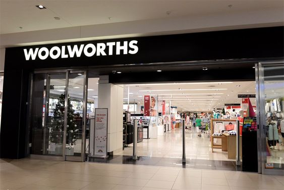

Founded by Max Sonnenberg, Woolworths first opened its doors on 30 October 1931 in Plein Street, Cape Town, in the dining room of the recently closed down Royal Hotel. Owing to its success, it led to opening two more stores in the Cape
Trading hours
- Mon-Fri : 08:00h - 18:00h
- Sat : 07:00h - 21:00h
- Sun : 09:00h - 10:00h